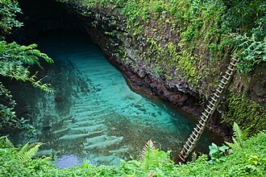

Islands of Samoa

Samoa is one of the many islands that make up Polynesia. It is at the center of the Polynesia Triangle which is where the title "heart of Polynesia" comes from. In samoa they have their own way of living which is called "Fa'a Samoa".
Samoa is rich in their history and cultural traditions. Many of these traditions are alive and continue to guide the way the samoan people live. One of the pride and joys for the nation Samoa is their Rugby League Team, known as "Toa Samoa".